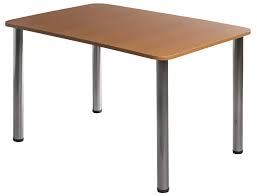
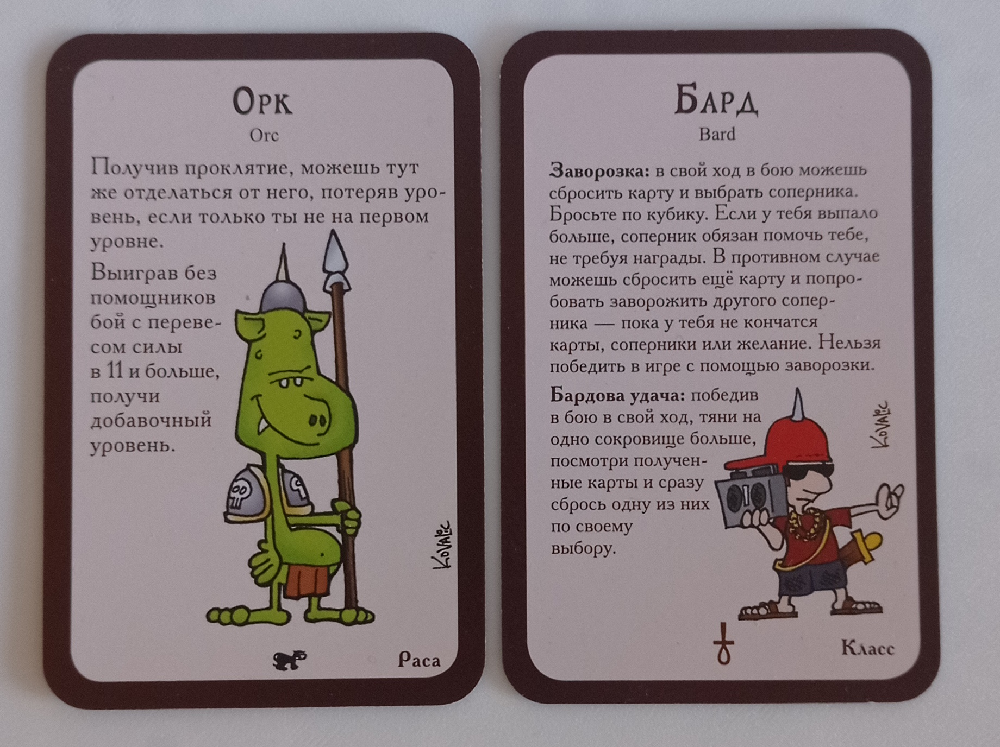
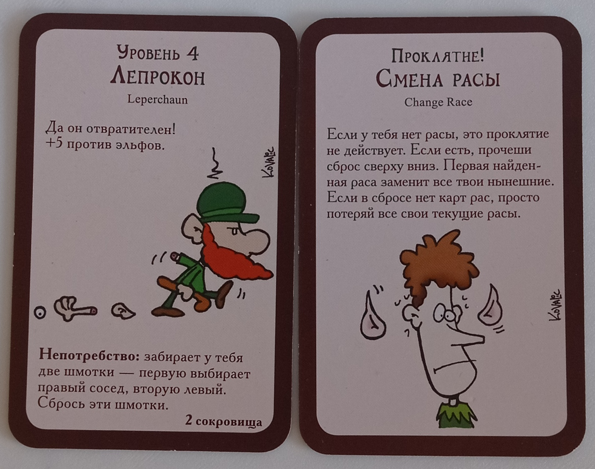

Манчкин
«Манчкин» — это карточная соревновательная настольная игра для 3–6 человек, которая пародирует ролевые RPG. Вы будете выступать в роли искателя приключений, чья цель — достичь 10-го уровня. Игра очень весёлая и увлекательная, особенно благодаря тому, что вы можете мешать своим соперникам. Однако разработчики оставили возможность помогать своим оппонентам, что создаёт у каждого игрока чувство неопределённости в различных ситуациях: «А если я сейчас начну всех валить, не захотят ли они потом завалить меня?» или «Может, если я помогу, он потом поможет мне?». Хотя опыт игры в «Манчкина» у меня отсутствует, кроме сессий в ПК-версию, прочитав правила и послушав мнения тех, кто играл в неё в компании, я предполагаю, что она будет часто провоцировать игроков на внеигровые конфликты, учитывая, что даже в правилах сказано: «Спорные ситуации разрешаются громкой перебранкой, последнее слово в которой остаётся за владельцем игры». Надеюсь, что во время этих конфликтов кое-кто не вытащит вместо карты шмотки свой винчестер 1897 года выпуска, и все останутся живы после партии. В любом случае, игра очень интересна и заслуживает вашего внимания. Правила достаточно просты, однако в них много нюансов, о которых я не стану здесь рассказывать.
как проходит игра
Игра проходит следующим образом: сначала вы делите карты на две колоды — те, у которых на рубашке изображена дверь, и те, у которых на рубашке изображены горы
сокровищ. После этого каждому игроку выдаётся по четыре карты из каждой колоды, затем игроки анализируют свои карты и выставляют те, которые могут (например,
карты расы, класса или снаряжения). Когда всё это сделано, выберите того, кто ходит первым, и начинайте игру: в свой ход игрок пройдёт через три фазы, а именно:
Игра продолжается до тех пор, пока кто-то из игроков не достигнет 10-го уровня. Уровни игрок получает после победы над монстром, от специальных карт,
дающих уровень, или от продажи предметов. Важно отметить, что 10-й уровень можно получить только за победу над монстром. Естественно, большинство игроков
попытаются помешать вам убить монстра на вашем девятом уровне, поскольку они проиграют, если вы победите монстра.
элементы игры и правила
игровое поле

Стол — по моему опыту, это наилучшее игровое поле. Да, у него есть конкурент в лице пола, но все мы знаем, что стол гораздо удобнее благодаря своей практичности.
Плюс на нём можно что-то съесть или выпить, поставить, положить... И так ещё долго можно продолжать. В общем, 10/10.
раса и класс

По сути, раса и класс помогут вам изменить базовые правила или предоставят дополнительные возможности.
В целом, я не вижу смысла дальше подробно останавливаться на видах карт, ведь на большинстве из них уже указано, что они делают и когда.
Поэтому далее я расскажу лишь о процессе боя.
бой, награда и смерть

Бой начинается тогда когда игроку в первой фазе попадается монстр, во время боя игрок сравнивает свою боевую мощь с мощью монстра с которым он сражается,
боевая мощь игрока определяется его уровнем, но помимо этого к этому значению добавляются надетые на него шмотки добавляющие боевую мощь, а также есть
некоторые сокровища которые добавляют боевую мощь и могут быть разыграны во время боя,Также во время боя если игрок не может перевысить силу монстра он
может попросить помощи у своих соперников естественно не просто так а за какую-то часть от награды за победу, если же никто так и неотозвался на зов помощи,
причем помимо этого игроки могут вам еще больше усугубить ситуацию картами усилителей монстров,Если по итогу ваша боевая мощь выше чем у монстра вы его
побеждаете и получаете награды которые указаны на его карте, а также повышаете свой уровень, но если сила монстра выше вашей или равна ей что же тогда делать?
смываться!, чтобы смыться вам нужно бросить кубик если выпадет пять или больше вы сбежали, правда некоторые монстры и шмотки могут упращать или усложнять
процесс смывки, если же у вас не получалось сбежать вас догоняет монстр и творит с вами нерпотребство, оно указано на карте монстра, иногда монстры могут и
убить и тогда наступает смерть, когда наступает смерть вы сбрасываете все свои карты и уровень и вам выдаются новые восем карт и вы продолжаете с первым уровнем.
Остальные, более глубокие механики игры мы уже разберём по ходу геймплея за столом. :3